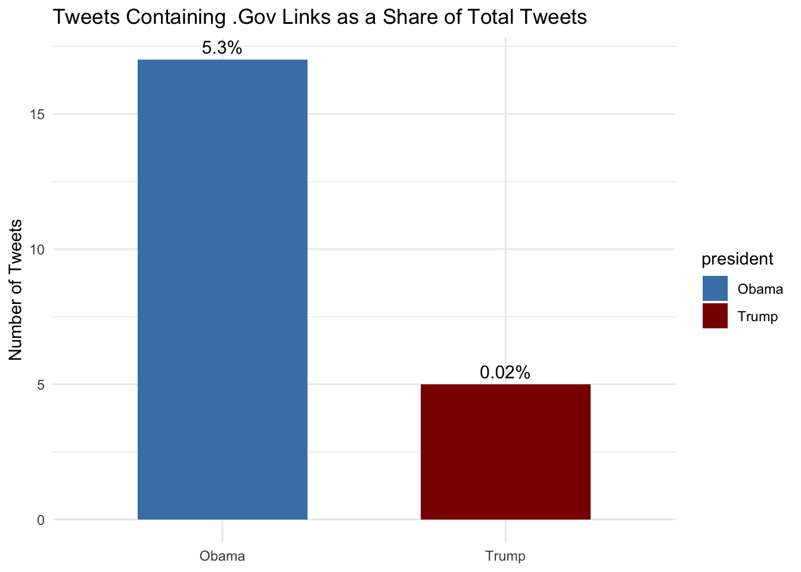

Ananlyzing Obama’s Tweets through the last two years of his presidency
Obama gained access to Twitter on May 18, 2015, roughly two years before leaving office. Since then, the platform has become an increasingly important tool for elected officials to share information with the public. This analysis examines the content of his tweets, focusing specifically on those that contained links to government resources. Similarly, the project extends this analysis to Donald Trump’s first presidency, comparing how he used Twitter to communicate with the public and whether his tweets directed users to official government sources. Overall, the project aims to evaluate how each administration leveraged social media as a channel for public information versus political messaging.
Refrence 1 : The data used in this analysis comes from the National Archives, which maintains a full record of Barack Obama’s tweets during his presidency. The dataset was downloaded as a CSV file and stored locally for analysis.
Refrence 2: Mark Hershey compiled the dataset of Trump’s Tweets and they are stored in his github linked below. Original Dataset for Trumps Tweets
# A tibble: 6 × 12
tweet_id in_reply_to_status_id in_reply_to_user_id timestamp source text
<dbl> <dbl> <dbl> <chr> <chr> <chr>
1 7.97e17 NA NA 2016-11-11 17… "<a h… Toda…
2 7.96e17 NA NA 2016-11-08 15… "<a h… Toda…
3 7.94e17 NA NA 2016-11-03 23… "<a h… It's…
4 7.94e17 NA NA 2016-11-03 06… "<a h… It h…
5 7.90e17 NA NA 2016-10-23 17… "<a h… I'll…
6 7.90e17 NA NA 2016-10-21 22… "<a h… Chec…
# ℹ 6 more variables: retweeted_status_id <dbl>,
# retweeted_status_user_id <dbl>, retweeted_status_timestamp <chr>,
# expanded_urls <chr>, text_lower <chr>, text_noline <chr>
The table above uses data from the National Archives containing Obama’s tweets during his presidency. He posted a total of 325 tweets over his two-year tenure on Twitter. The next step in the analysis involves cleaning the data to better understand the nature of his tweets, with a focus on those containing links. This table displays each tweet’s date, source, text, retweet status, and any associated URLs. The cleaning process removes rows with missing text and standardizes the remaining data by converting all text to lowercase and eliminating line breaks.
Code
# Identifying tweets that contain links and government links. library(tidyverse)library(stringr)tweets_table <- tweets |>mutate(created_at = timestamp,has_link =!is.na(expanded_urls),gov_link =str_detect(expanded_urls,"(?<=https?://)[^\\s]*\\.gov"), has_http_in_text =str_detect(text, "https?://[^\\s]+")) |>select(created_at, text, has_link, gov_link, has_http_in_text)
Code
#Creating a new table with those links tweets_table |>summarise(total_tweets =n(),with_links =sum(has_link),pct_with_links =mean(has_link),pct_gov_of_links =mean(gov_link[has_link], na.rm =TRUE) )
This table showcases the total number of tweets that Obama posted during his short Twitter tenure. The table highlights tweets that contained links, and further identifies the percentage of those links that directed users to government websites. We can see that there were a total of 321 tweets, 135 of which contained links (42%). Among those tweets, 12.5% included links to government websites.
Code
#Visualizing which tweets contained links vs Gov linkslibrary(lubridate)library(ggplot2)links_summary <- tweets_table |>summarise(with_links =sum(has_link, na.rm =TRUE),with_gov_links =sum(gov_link, na.rm =TRUE) ) |>pivot_longer(cols =everything(), names_to ="type", values_to ="count")ggplot(links_summary, aes(x = type, y = count, fill = type)) +geom_col(width =0.5) +labs(title ="Obama Tweets Containing .Gov and Non .Gov Links",x =NULL,y ="Number of Tweets" ) +theme_minimal() +scale_fill_manual(values =c("steelblue", "darkred"))
The graph above visualizes the data from the previous table, showing the total number of tweets that contained links and the subset that included government links. Only a small percentage of tweets directed users to .gov websites. Since Twitter is a relatively new platform for sharing official information, it would be interesting to compare how more recent administrations have used it to promote government resources and public communication.
The code above isolates all of Obama’s tweets that contain .gov links and extracts the specific government domain from each URL. It then counts how many times each unique domain appears to identify which sites he referenced most frequently. The resulting table shows that Obama’s tweets most often linked to official government pages such as whitehouse.gov, emphasizing his use of Twitter to share verified information and policy resources.
Code
library(stringr)library(dplyr)gov_domains <- tweets_table |>filter(gov_link, !is.na(expanded_urls)) |>mutate(urls =strsplit(expanded_urls, "\\s+")) |># If a tweet has several URLs, split them so each is counted tidyr::unnest(urls) |>mutate(domain =str_extract(urls, "(?<=://)[^/]+"),domain =str_remove(domain, "^www\\.")) |>filter(str_detect(domain, "\\.gov$")) |>count(domain, sort =TRUE)head(gov_domains, 10)
This table lists the government websites most frequently linked in Obama’s tweets. The majority of links directed users to go.wh.gov, a shortened White House domain used to share official announcements and press materials. Other links point to various federal resources such as HealthCare.gov, FAFSA.gov, and Vote.gov, reflecting Obama’s efforts to promote public programs and civic engagement through his social media presence.
Reading and Cleaning Trumps Tweets:
Code
library(tidyverse)# Read the CSV from GitHubtrump <-read_csv("https://raw.githubusercontent.com/MarkHershey/CompleteTrumpTweetsArchive/refs/heads/master/data/realDonaldTrump_in_office.csv")head(trump)
# A tibble: 6 × 4
ID Time `Tweet URL` `Tweet Text`
<chr> <dttm> <chr> <chr>
1 @realDonaldTrump 2017-01-20 06:31:00 https://twitter.com/realDon… It all begi…
2 @realDonaldTrump 2017-01-20 11:51:00 https://twitter.com/realDon… Today we ar…
3 @realDonaldTrump 2017-01-20 11:51:00 https://twitter.com/realDon… power from …
4 @realDonaldTrump 2017-01-20 11:52:00 https://twitter.com/realDon… What truly …
5 @realDonaldTrump 2017-01-20 11:53:00 https://twitter.com/realDon… January 20t…
6 @realDonaldTrump 2017-01-20 11:54:00 https://twitter.com/realDon… The forgott…
Code
names(trump)
[1] "ID" "Time" "Tweet URL" "Tweet Text"
Re-naming the columns of Trumps tweets so they match that of Obama’s
# A tibble: 6 × 6
id timestamp tweet_url text text_lower text_noline
<chr> <dttm> <chr> <chr> <chr> <chr>
1 @realDonaldTrump 2017-01-20 06:31:00 https://twi… It a… it all be… it all beg…
2 @realDonaldTrump 2017-01-20 11:51:00 https://twi… Toda… today we … today we a…
3 @realDonaldTrump 2017-01-20 11:51:00 https://twi… powe… power fro… power from…
4 @realDonaldTrump 2017-01-20 11:52:00 https://twi… What… what trul… what truly…
5 @realDonaldTrump 2017-01-20 11:53:00 https://twi… Janu… january 2… january 20…
6 @realDonaldTrump 2017-01-20 11:54:00 https://twi… The … the forgo… the forgot…
# A tibble: 6 × 4
created_at text has_link gov_link
<dttm> <chr> <lgl> <lgl>
1 2017-01-20 06:31:00 It all begins today! I will see you at … FALSE FALSE
2 2017-01-20 11:51:00 Today we are not merely transferring po… FALSE FALSE
3 2017-01-20 11:51:00 power from Washington, D.C. and giving … FALSE FALSE
4 2017-01-20 11:52:00 What truly matters is not which party c… FALSE FALSE
5 2017-01-20 11:53:00 January 20th 2017, will be remembered a… FALSE FALSE
6 2017-01-20 11:54:00 The forgotten men and women of our coun… FALSE FALSE
Summary of the table that shows total amount of tweets containing gov links
The table above shows the total number of tweets that Trump posted during his first term. Crucially, it shows the percentage that contained links (50%) and, of those, how many directed users to government websites (0.0004%).
# A tibble: 6 × 5
created_at text has_link gov_link urls
<dttm> <chr> <lgl> <lgl> <chr>
1 2017-01-20 11:58:00 It is time to remember that...htt… TRUE FALSE http…
2 2017-01-20 12:00:00 So to all Americans, in every cit… TRUE FALSE http…
3 2017-01-20 12:13:00 TO ALL AMERICANS https://www.face… TRUE FALSE http…
4 2017-01-25 18:03:00 Beginning today, the United State… TRUE FALSE http…
5 2017-01-26 17:53:00 Miami-Dade Mayor drops sanctuary … TRUE FALSE http…
6 2017-01-27 10:30:00 . @ VP Mike Pence will be speakin… TRUE FALSE http…
library(ggplot2)ggplot(comparison_counts, aes(x = president, y = gov_links, fill = president)) +geom_col(width =0.6) +geom_text(aes(label =paste0(round(pct_gov_links, 2), "%")),vjust =-0.5, size =4) +labs(title ="Tweets Containing .Gov Links as a Share of Total Tweets",x =NULL,y ="Number of Tweets" ) +scale_fill_manual(values =c("steelblue", "darkred")) +theme_minimal()

Donald Trump’s use of Twitter is vastly different from that of his predecessors. Over the course of his first term (2016 - 2020), Trump tweeted more than 23,000 times, often using the platform as his main form of disseminating information to the public. However, among those 23,000 tweets, only 5 contained direct links to government resources (0.02%).
In comparison to Obama, who used Twitter as a vehicle to distribute institutional communication, often linking verified government resources like WhiteHouse.gov or HealthCare.gov. Trump’s feed was often comprised of commentary, reactions, and amplification of external media sources. His use of the platform reflected his style of immediacy and opinion, directly engaging with his audience rather than supplying vital information during a crisis like COVID.
The quantitative difference between the two reflects a broader stylistic and strategic contrast. Obama used his Twitter as a strategic governance tool, and Trump used it as a personal broadcasting platform. Despite the absolute prolific amount of tweets, the near absence of .gov links showcases a shift from institutional communication to personal rhetoric, which in turn became a defining attribute of his administration.
Original Source: “Archived White House Websites and Social Media | Barack Obama Presidential Library.” Obamalibrary.gov, 2017, www.obamalibrary.gov/digital-research-room/archived-white-house-websites-and-social-media. Accessed 4 Dec. 2025.